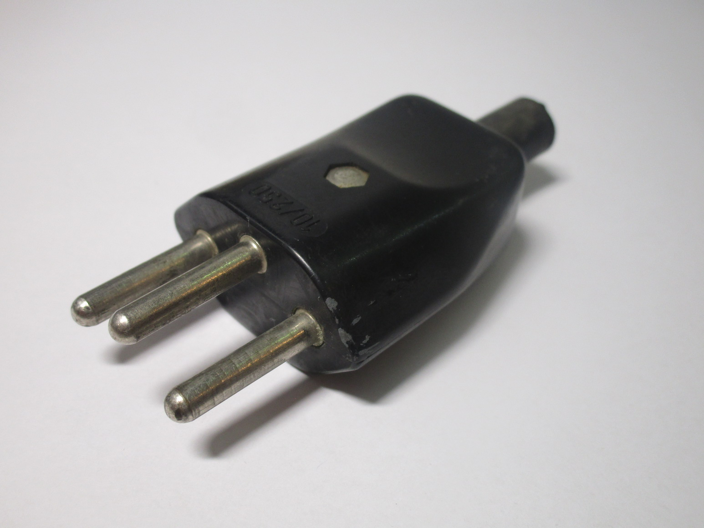
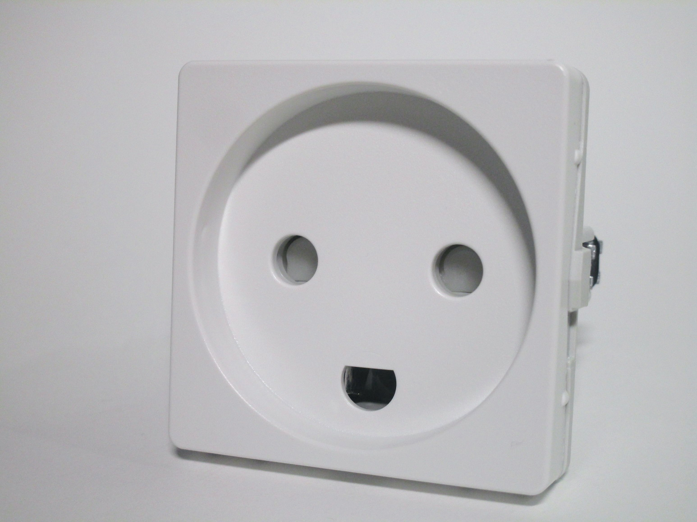
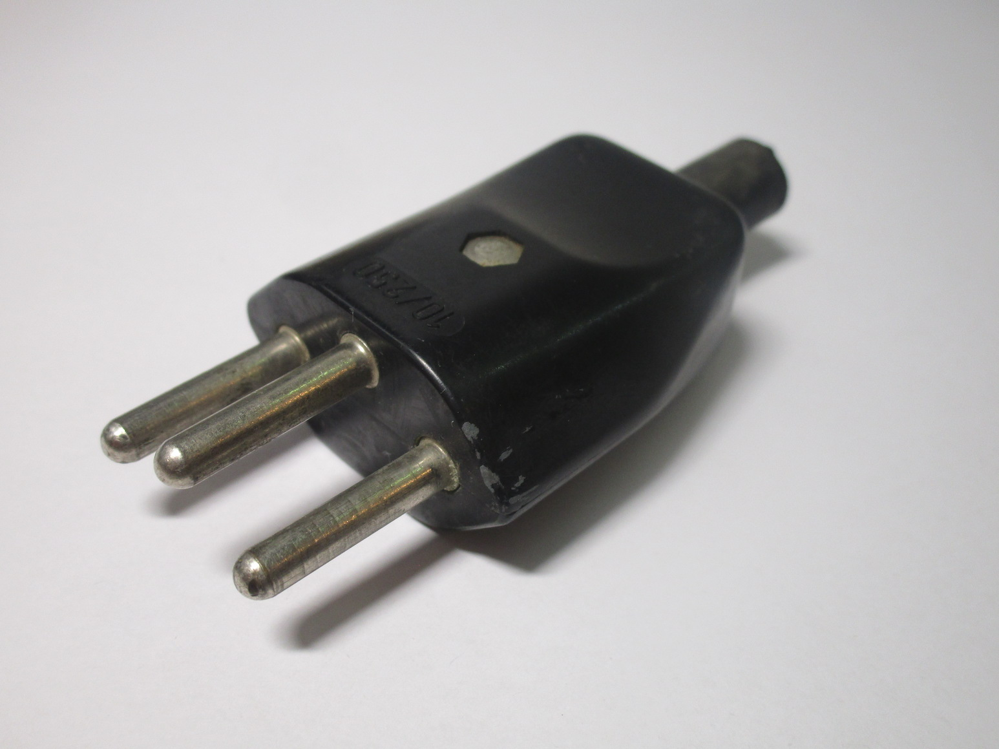
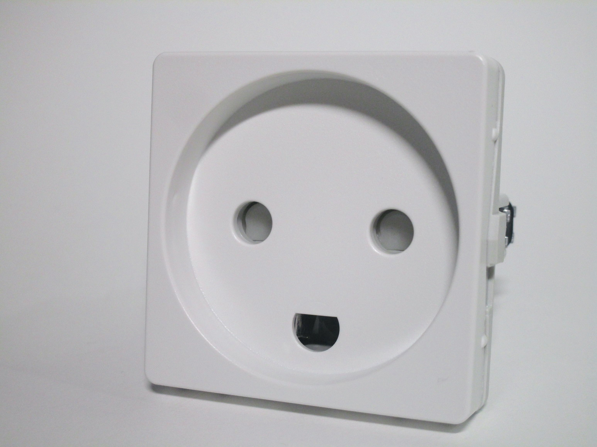

Types of plugs and sockets found in Europe
Electrical codes across the various European countries often evolved separately, with different local variations. As such, it's notable that nowadays, aside from a few specific cases, most Continental European countries have adopted the same standard for plugs, which work in either of the two styles of socket most commonly used.
Other types of plug and socket standards
While the CEE standard plugs and sockets are used in the majority of Europe, there are some countries that, generally for historical reasons, use different standards (either partially or entirely):
 



{kind=link}
{kind=link}
1. Italy – In Italy a different type of plug standard is used, with non-polarised 10A and 16A plugs and sockets; Schuko plugs are used extensively for most appliances, with "traditional" Italian ones mainly being found on laptop chargers. However, sockets compatible both with Schuko plugs as well as Italian plugs exist, however they're generally only found in newer or recently renovated houses (and even then it's not universal, as installing them isn't mandatory).
2. Switzerland – Switzerland uses polarised 10A (and, rarely, 16A) plugs and sockets with an hexagonal shape (similar to the Europlug). Adaptors to convert Schuko appliances exist and are sometimes used, but generally most appliances sold there are already fitted with the correct plug.
3. Denmark – Danish sockets are compatible with CEE plugs of any type, however due to their plugs using an earth pin, any earthed CEE plug (which isn't uncommon to find) won't have an earth connection when plugged into one of these sockets. Because of this, Schuko and French-style sockets have been made legal to install fairly recently (though there isn't any sort of requirement to install them yet).
Note that in all of these countries the Europlug is used extensively, and in Denmark and Italy the CEE 7/7 and 7/17 are also used (though it requires an adaptor for Italian sockets).